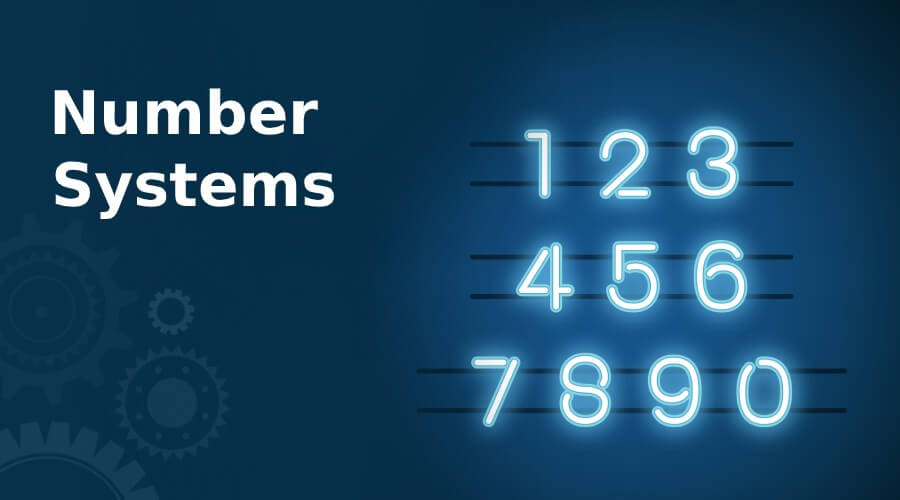

This portfolio project is a blog created by yours truly, Mr. Galario. Hence, this blog is named as "G-Blog" which means "Galario's Blog". This blog is intended to share information and knowledge about different ITC topics discussed in class during the semester. As you explore this blog, this is my own unique way where I share what I learned and what I think about various topics I have learned from ITC and programming for this semester.
In this site, I'll be discussing these topics:
Concepts and Definitions of Information Systems: Data, Information, and Knowledge
Areas of the Computer Science Discipline
Various Uses of Computer Systems in the Modern World
Algorithm, Pseudocode, and Flowcharting
Concept of Number Systems
Software and Application Concepts: General and Specific Purpose Software
Computer Hardware Concepts: IPOS Devices, Internal and External Parts
Software Application Types: Utilities
Basic Concepts and Definitions of Data and Database
Basic Concepts of Computer Networks: Topology, Scope, Types, and Tools
Security, Ethics, and Privacy: IT Code of Ethics
HTML Programming
CSS Programming
Future of Computing: Generative AI and Data Analytics
About the Student
I am Aaron John C. Galario, a 20 year-old, BSIT-1 student at the University of San Carlos. I graduated from St. Alphonsus Catholic School(Lapu-Lapu City, Cebu)Inc. and completed elementary and secondary levels. I graduated as a STEM graduate in their program and made my parents proud of my efforts. I enrolled in USC for their Information Technology course because my brother-in-law suggested that USC is a good university for IT and my family wanted me to be prepared for my future wherein the world would be dependent on technology, which we have, based on research, physical observations, social communication, and media transitions. I created this portfolio to share my knowledge of different topics, projects, activities, research, and programming languages. I aim to advocate the purpose of my academics and open my learning to Information Technology in today's time. Throughout my experience with ITC, it has been very informative to understand and a challenge to adapt to because of my learning habits that I need to change in my academic life.
Portfolio
In this portion, we'll explore various topics I learned this semester. With the help of Artificial Intelligence (AI) and digital media platforms, I can showcase them with ease and efficiency. But before you engage in these topics, I would like to acknowledge my references from various published sites, documents, shared PowerPoints, media, and my knowledge. The topics and information I have shared are just what I understood and summarized, please don't judge and if you have complaints, feel free to contact me using the contact information in the contact tab.
Concepts and Definitions of Information Systems: Data, Information, and Knowledge
The concept of Information Systems about data, information, and knowledge are used interchangeably by professionals with different meanings. For instance, data is presumed raw and unprocessed information, a collection of elements without meaning. Information is known as the processed data that provides organized and meaningful instructions. Lastly, Knowledge is about understanding information to create results in the real world. Today, data is created through the innovative technology we make, like applications, websites, and machines. These innovations collect facts, such as numbers, words, measurements, observations, and more, storing them electronically in folders/ databases. As the system gathers the data, it digitally transforms it into readable information like coding language, system information, hypertext language, or digital media information. This process helps the system understand unprocessed data and transform it into an organized and clear instruction. Through this process of data and information, the person gains knowledge about the information processed by the system from the data input, helping them understand how to plan, analyze, create, implement, and innovate.
Computer Science Discipline
Cybersceurity and Artificial Intelligence are the common areas in which Computer Science aims to be developed in professional work to develop innovation. The areas I chose to discuss are what I believe are essential and should be improved and maintained in our daily lives. Here are some important concepts of my chosen areas within Computer Science that these two areas commonly benefit:
Machine Learning: focuses on developing algorithms that allow computers to learn from data without being explicitly programmed like Machine learning in AI systems to identify patterns and anomalies in data, to detect security threats (viruses, malware, worm, etc.)
Data Mining: focuses on extracting useful information from large datasets used in AI systems. This technique helps identify patterns and trends in data that can be used to improve cybersecurity.
Network Security: focuses on protecting computer networks from unauthorized access and attacks like Network security professionals who use AI systems to detect and respond to digital network attacks.
Cryptography: focuses on securing communications and data storage, which uses an AI system to protect sensitive data from unregistered access.
This is an actual footage of an AI robot in Japan
Various Uses of Computer Systems in the Modern World
Computer systems in the Modern world has helped us through difficult challenges that we suffered for a long time and up until now, we are still trying to figure out a more efficient, professional, and guaranteed "safe". In the field of medical healthcare, industries have undergone a dramatic transformation thanks to the involvement of computer systems from the traditional observation and analysis based on equipment and handling of tools and "fifty-fifty" chance to the miraculous successful operations and efficient digital equipment for medical services and healthcare for the patients, computers have revolutionized how we diagnose, treat, and manage health.
Main Uses of Computer Systems
Diagnosis: Computer-aided diagnosis (CAD)systems have contributed to analyzing medical images like X-rays, CT scans, and MRIs, helping doctors, medical practitioners, and surgeons detect abnormalities with accuracy.
Research and Development: Computers were used for analyzing datasets, identifying patterns, and developing new medical drugs, safer treatments, and reliable medical devices to improve healthcare services and medical practices.
Revolutionized Work and Its Potential Future Uses
Efficiency and Accuracy: Automation of tasks, letting healthcare professionals prioritize patient care and minimize human error in record-keeping and medical calculations.
Robotic Surgery: minimally invasive surgery, offering greater precision and less recovery time for patients>
Improved Patient Outcomes: Accurate diagnoses, personalized treatment plans, and better access to information, improving patient outcomes and reducing hospital readmissions.
Virtual Reality Simulations: VR simulations are being used to help patients understand the possibilities of their medical decisions from their injuries and illnesses while maintaining "doctor-patient confidentiality" and avoiding jargon.
Enhanced Communication: EHRs and telemedicine platforms facilitate better communication between patients, doctors, and other healthcare providers, improving coordination and care.
AI for Diagnosis: AI-powered systems analyze patient data and predict potential health risks.
Empowered Patients: Healthcare patients have greater and more secure access to their medical records to be more involved in their healthcare decisions.
Personalized Medicine: Computer algorithms can access the analysis of individual genetic profiles to consider effective and proper care.
Algorithm, Pseudocode, and Flowcharting
An example of a Pseudocode
START
PRINT "What is the purpose of algorithms?"
PRINT "Algorithms help in problem-solving by providing a step-by-step approach."
PRINT "How do pseudocode and flowcharts aid in programming?"
PRINT "Pseudocode allows for simple writing of code logic."
PRINT "Flowcharts visualize the process, making it easier to understand."
PRINT "What are the differences between pseudocode and flowcharts?"
PRINT "Pseudocode is text-based, while flowcharts are diagrammatic."
END
An example of a Flowchart:
Concept of Number Systems
The common number systems used in computing are Binary, Decimal, and Hexadecimal Number Systems. These number systems represent data for the computer system to convert into information. Modern Computers are built on electronic circuits that can only be in one of two states: either switched on or switched off and are represented by the values of 1 (on) and 0 (off) in the binary system. Therefore, the binary system is recognized as the perfect language for computers to understand and manipulate data. Here is how they are used:
Binary (Base-2): This is the foundation of how computers work and uses only two digits: 0 (zero) and 1 (one).
Decimal (Base-10): This is the system we can use in our everyday life and has ten single digits: 0, 1, 2, 3, 4, 5, 6, 7, 8, and 9 (zero - nine).
Hexadecimal (Base-16): This system is often used to represent memory addresses to represent binary data in a more compact form. This system uses sixteen digits: 0, 1, 2, 3, 4, 5, 6, 7, 8, 9, A, B, C, D, E, and F. (zero - nine and A - F). The purpose of using the letters A to F is to represent the values of 10 - 15 since double-digit values can't be rendered in the computers.

A = 10
B = 11
C = 12
D = 13
E = 14
F = 15
Conversion of Decimal to Binary
Divide by 2 repeatedly: Keep dividing the decimal number by 2, noting the remainders.
Read the remainders in reverse order: This gives you the binary equivalent.
Example: Convert 13 (decimal) to binary.
13 / 2 = 6 (remainder 1)
6 / 2 = 3 (remainder 0)
3 / 2 = 1 (remainder 1)
1 / 2 = 0 (remainder 1)
Reading the remainders in reverse: 1101 (binary)
Conversion of Decimal to Hexadecimal:
Divide by 16 repeatedly: Keep dividing the decimal number by 16, noting the remainders.
Convert remainders greater than 9 to their hexadecimal equivalents: Use A, B, C, D, E, and F for remainders 10 through 15.
Read the remainders in reverse order: This gives you the hexadecimal equivalent.
Example: Convert 255 (decimal) to hexadecimal.
255 / 16 = 15 (remainder 15, which is F in hexadecimal)
15 / 16 = 0 (remainder 15, which is F in hexadecimal)
Reading the remainders in reverse: FF (hexadecimal)
Software and Application Concepts: General and Specific Purpose Software
General-purpose software is designed to perform various tasks to assist a broad audience as a versatile tool that can be used for different things. This software provides a design layout for everyday tasks and activities and empowers users with basic tools for productivity, communication, and entertainment.
Specific-purpose software is designed for a specific task/set of tasks and is highly specialized for the needs of the user/s addresses specialized needs and workflows. It offers powerful features and functionalities that offer unique requirements for a particular user/s like a precision tool designed for a specific job.
Feature
Purpose
Target Audience
Functionality
Examples
General-Purpose Software
Broad range of tasks
Wide audience
Adaptable
Operating systems (Windows, Linux), Web browsers (Chrome, Opera), Word Processors (Microsoft Word, WPS Office), Spreadsheets (Microsoft Excel, Google Sheets)
Computer Hardware Concepts: IPOS Devices, Internal and External Parts
IPOS represents Inputs, Processing, Output, and Storage
Input Devices: devices that allow users to input data into the system.
Mouse: Used for navigating and selecting items onscreen.
Keyboard: Used for typing text.
Scanner: Used for digitizing physical documents.
Processing Devices: devices that process the input to perform tasks.
CPU (Central Processing Unit): The computer's brain that executes instructions.
Server: A powerful computer that manages network resources and processes data.
Output Devices: devices that display the output of the processing devices.
Monitor: Displays visual output from the computer.
Printer: Produces physical copies of documents and images.
Storage Devices: devices that store data for future use.
Hard Drive: A traditional storage device that holds large amounts of data.
Cloud Storage: Allows data to be stored online and accessed from anywhere.
Software Application Types: Utilities
Utility software keeps things running smoothly, fixes device problems, and protects personal data. These are some common types of Utility Software and their examples:
System Utilities: These tools help manage and optimize your operating system to be efficient and run smoothly.
Disk Cleanup: Removes temporary files and other unnecessary things to free up space.
Disk Defragmenter: Rearranges scattered files on your hard drive for faster access.
Task Manager: Monitors and manages running processes.
System Information: Provides information about your computer's hardware and software.
Security Utilities: These tools protect your computer from threats, keeping your data safe.
Antivirus Software: Detects and removes viruses, worms, and other malicious software.
Firewall: Acts as a barrier between your computer and the internet, blocking unauthorized access.
Anti-spyware: Protects against programs that track your online activity and steal personal information.
Data Encryption: Encrypts sensitive data to prevent unauthorized access.
Backup Utilities: These tools that duplicate your important data and ensure you can recover the information whenever the device crashes or the files are lost.
File Backup: Creates copies of specific files or folders in the device.
System Image Backup: Creates a complete snapshot of the operating system and all installed programs in the device.
Cloud Backup: Stores your data on remote servers, providing extra security and accessibility.
File Compression Utilities: These tools reduce the size of files to store, share, and download easily, making your data more compact.
ZIP: A common file compression format that reduces file sizes without losing data.
RAR: Another popular compression format known for its high compression ratios.
7-Zip: A powerful free compression tool that supports multiple formats.
These Utility Software contribute to system Maintenance and cybersecurity of the user's device by improving system performance, freeing up disk space, helping diagnose possible threats from foreign/ alien drives and fix problems, protecting against threats, preventing data breaches, ensuring your data privacy, safeguarding data against memory loss and crashes, allowing recovery files and systems in case of disaster, optimizing storage space, sharing files easier, and contributing in the user's workflows to improve efficiency and enhance overall productivity.
Basic Concepts and Definitions of Data and Database
A Database organizes data in a structured way for retrieving, protecting, and facilitating it from large amounts. Technology has been contributing to the education of schools, colleges, universities, and learning centers. As they progress, the data's infrastructure has become critical to achieving some of these goals.
Organization: The database would likely be structured to represent different variables.
Different Scenarios:
Students Table: Would hold information about individual students.
Courses Table: This table would store details about the courses offered.
Enrollments Table: This table would connect students and courses, recording which students are enrolled in which courses.
Faculty Table: This table would contain information about the faculty members teaching the courses.
Data Fields: Would display the user's information.
Some suggestions based on the scenarios given:
Student's Table:
Student ID: Unique identifier for each student.
First Name: Student's first name.
Last Name: Student's last name.
Date of Birth: Student's date of birth.
Gender: Student's gender.
Address: Student's residential address.
Phone Number: Student's phone number.
School Email Address: Student's email address connected to the school.
Personal Email Address: Student's private and personal email address.
Course: Student's academic course.
Year of Study: Student's current year of study.
GPA: Student's Grade Point Average.
Courses Table:
Course ID: Unique identifier for each course.
Course Name: Name of the course.
Course Description: Brief description of the course content.
Study Units: Number of units awarded for the course.
Department: Department offering the course.
Faculty ID: ID of the faculty member teaching the course.
Enrollments Table:
Enrollment ID: Unique identifier for each enrollment record.
Student ID: Referencing the Students table.
Course ID: Foreign key referencing the Courses table.
Grade: Student's grade in the course.
Semester: Semester in which the student is enrolled in the course.
Year: Academic year of enrollment.
Faculty Table:
Faculty ID: Unique identifier for each faculty member.
First Name: Faculty member's first name.
Last Name: Faculty member's last name.
Department: Department the faculty member belongs to.
Email Address: Faculty member's email address.
Phone Number: Faculty member's phone number.
The tables would be linked through their IDs to connect each relationship:
Students Table to Enrollments Table: The Student ID in the Enrollments table would link to the Student ID in the Students table.
Courses Table to Enrollments Table: The Course ID in the Enrollments table would link to the Course ID in the Courses table.
Faculty Table to Courses Table: The Faculty ID in the Courses table would link to the Faculty ID in the Faculty table.
Basic Concepts of Computer Networks: Topology, Scope, Types, and Tools
A Network topology is the organization and arrangement of various elements and variables like links, nodes, switches, and main sources in a computer network.
These are common types of Network Topologies and their suitable type of network
Bus Topology - All devices share a single communication line.
Suitable for small networks where the cost of cabling is a concern.
Suitable for Personal Area Network (PAN), a small network and typically is within a range of a few meters used for connecting personal devices like smartphones, tablets, and laptops.
Star Topology- All devices are connected to a central hub or switch.
Common in home and office networks due to its ease of installation and management.
Ring Topology- Each device is connected to two other devices, forming a circular data flow when communicating.
Often used in LANs where data needs to be transmitted in one direction.
Both topologies are suitable for Local Area Network (LAN) which covers a small area, like a single building or campus that requires high data transfer rates, low latency, and is typically owned by a single organization.
Mesh Topology- Every device is connected to every other device, providing multiple paths for data.
Used in networks requiring high reliability and redundancy, such as in telecommunications.
Suitable for Wide Area Network (WAN) that covers a large geographic area, connecting multiple LANs and lower data transfer rates between LANs, higher latency, and often involves leased telecommunication lines.
Tree Topology- A hybrid topology that combines characteristics of star and bus topologies.
Suitable for large networks with hierarchical structures, like corporate networks.
Hybrid Topology- A combination of two or more different topologies.
Used in complex networks that require flexibility and scalability.
Both topologies are suitable for Metropolitan Area Network (MAN) that spans throughout a city or a large campus, larger than a LAN but smaller than a WAN, often used by municipalities or large organizations.
Security, Ethics, and Privacy: IT Code of Ethics
In today's time, information, data, and knowledge have been revolutionized into digital media; a paperless and more compact than traditional pen and paper. The innovation of our new technology has given ease in communication, storage, workflow, utility, and productivity. But like in every innovation, it has its setbacks, possible threats, issues, and vulnerabilities from its useful potential. One of these issues is User Data Privacy and Cybersecurity. Data privacy and Security are important in technology use as it holds the collection and use of personal data raise significant ethical questions.
The IT Code of Ethics serves as a guiding principle for ethical conduct in the field. They are a resource that is trustworthy, promoting ethical conduct and mitigating risks on data privacy and security. Professionals can help create a secured and efficient digital environment for every user's comfort and safety. The Code of Ethics focuses on:
Promoting Transparency and Accountability: Emphasizes the importance of being explicit about data collection, its use, and its storage practices, informing users about their data and providing them with the option to control their information. It also encourages accountability by users to be responsible for upholding data privacy and security standards.
Prioritizing User Consent: Prioritized the importance of obtaining informed consent from the users before collecting and using their data ensuring that users understand the purpose of data collection, the types of data being collected, and the potential risks involved.
Emphasizing Data Minimization: Promotes the advantages of data minimization, collecting and storing data that is necessary for the personal purposes and helps reduce the potential for data breaches and misuse.
Promoting Secure Data Handling Practices: Encourages the use of suitable security measures to protect user data from unauthorized access like using strong passwords, encryption, two-factor authentication, and regular security protocols.
HTML Programming
HTML Programming is structured using various HTML tags and defines different parts of the content on a webpage. The basic structure of an HTML document includes the doctype declaration,the <html> element, a <head> section, and a <body> section.
Common HTML Tags:
<!DOCTYPE html>
<html lang="en">
<head>
<meta charset="UTF-8">
<meta name="viewport" content="width=device-width, initial-scale=1.0">
<title>My First Webpage</title>
</head>
<body>
<h1>Welcome to My Webpage!</h1>
<p>This is a simple paragraph to introduce my webpage.</p>
</body>
</html>
HTML Tags:
<!DOCTYPE html>: This line defines the document type and version of HTML being used.
<html lang="en">: This is the root element that contains all other elements of the webpage. The "lang" attribute specifies the language of the document.
<head>: This section contains meta-information about the webpage, such as the character set and the title that appears in the browser tab.
<meta charset="UTF-8">: Specifies the character encoding for the HTML document.
<title>: Sets the title of the webpage, which is displayed in the browser's title bar or tab.
<body>: This section contains the content that is displayed on the webpage.
<h1>: This tag defines the main heading of the page. Headings range from <h1> to <h6>.
<p>: This tag is used for paragraphs of text.
CSS Programming
CSS is a resourceful tool for creating visually appealing and engaging web pages for the audience. Learning the basics of CSS syntax and applying it to your HTML can enhance the user's experience of Website Development. Here is an example.
<style>
* {
margin: 0;
padding: 0;
box-sizing: border-box;
}
body {
font-family: Arial, sans-serif;
background-color: #f4f4f4; <!-- Light gray background -->
color: #333; <!-- Dark gray text for readability -->
line-height: 1.6; <!-- Spacing between lines -->
}
header {
background: #4CAF50; <!-- Green background for the header -->
color: white; <!-- White text color -->
padding: 10px 20px; <!-- Padding around the header -->
text-align: center; <!-- Centered text -->
}
h1 {
font-size: 2.5em; <!-- Large font size for main title -->
}
nav {
margin: 20px 0; <!-- Margin on top and bottom -->
}
nav a {
color: #4CAF50; <!-- Green color for links -->
text-decoration: none; <!-- No underline -->
margin: 0 15px; <!-- Space between links -->
}
nav a:hover {
text-decoration: underline; <!-- Underline on hover -->
}
.container {
display: flex; <!-- Using flexbox for layout -->
justify-content: space-between; <!-- Space between elements -->
margin: 20px; <!-- Margin around the container -->
}
.sidebar {
width: 25%; <!-- Sidebar takes 25% of the width -->
background: #fff; <!-- White background -->
padding: 15px; <!-- Padding inside the sidebar -->
}
.content {
width: 70%; <!-- Main content takes 70% of the width -->
background: #fff; <!-- White background -->
padding: 15px; <!-- Padding inside the content area -->
border-left: 1px solid #ddd; <!-- Light gray left border -->
}
footer {
text-align: center; <!-- Centered text in footer -->
padding: 10px; <!-- Padding around the footer -->
background: #4CAF50; <!-- Green background for the footer -->
color: white; <!-- White text color -->
}
</style>
Future of Computing: Generative AI and Data Analytics
In our modern technology, Generative AI has been widely used by users to explore, research, communicate, modify, create, handle, and analyze information. This innovation uses algorithms to generate outputs that resemble human-created content.
Potential Impact
Functionality: Generative AI focuses on pattern creation and generates new data that mimics "user data characteristics."
Data Handling: Generative AI can handle complex and unstructured data and allows the creation of diverse outputs.
Applications: Generative AI is used in creative fields like content creation, art generation, and even coding.
Ethical Considerations
Bias and Discrimination: AI systems can continue or maintain existing biases in data that could lead to unfair treatment of certain groups.
Transparency and Accountability: AI systems in their decision-making processes, ensuring transparent accountability.
Privacy: Personal data in AI raises concerns about privacy, surveillance, and data protection measures.
Creativity and Ownership: Problems and questions arise regarding the ownership of content created by AI and the implications for intellectual property rights.
Inclusiveness: Making sure AI technologies are accessible and beneficial to all segments of society is important for ethical AI deployment.

.jpg)

.jpg)
.jpg)

.jpg)